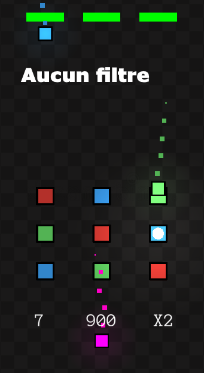
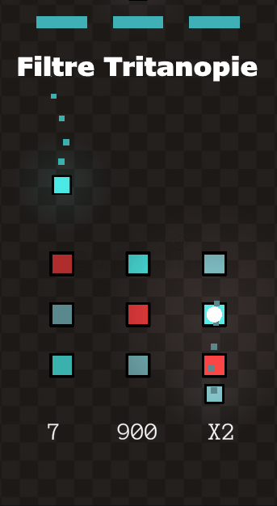
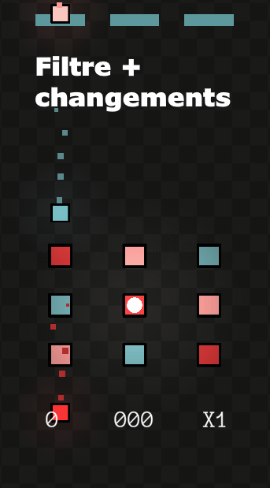

Le daltonisme concerne approximativement 9% des hommes et 1% des femmes. Cela englobe une partie conséquente de la population et donc un nombre important de joueurs potentiels ! Ce package Unity contient un outil vous permettant d’avoir toutes les clés en main afin de résoudre facilement et rapidement cette problématique.
Instructions et outil disponible ici !
| Mes contributions |
|
|  |  |  |
Contactez moi à l'adresse mail suivante : cdrcmag@outlook.fr